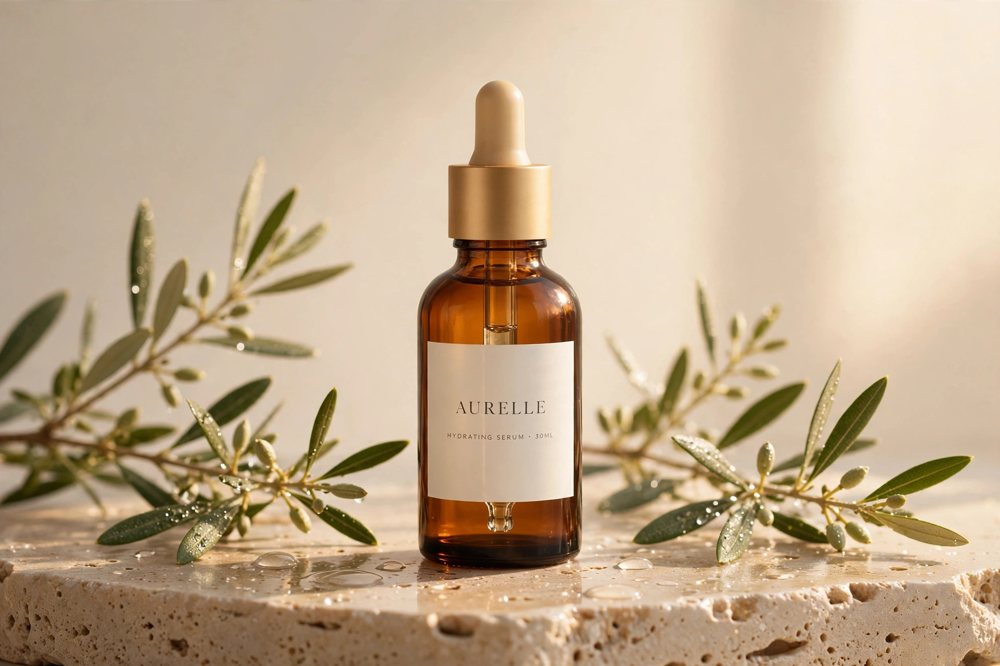
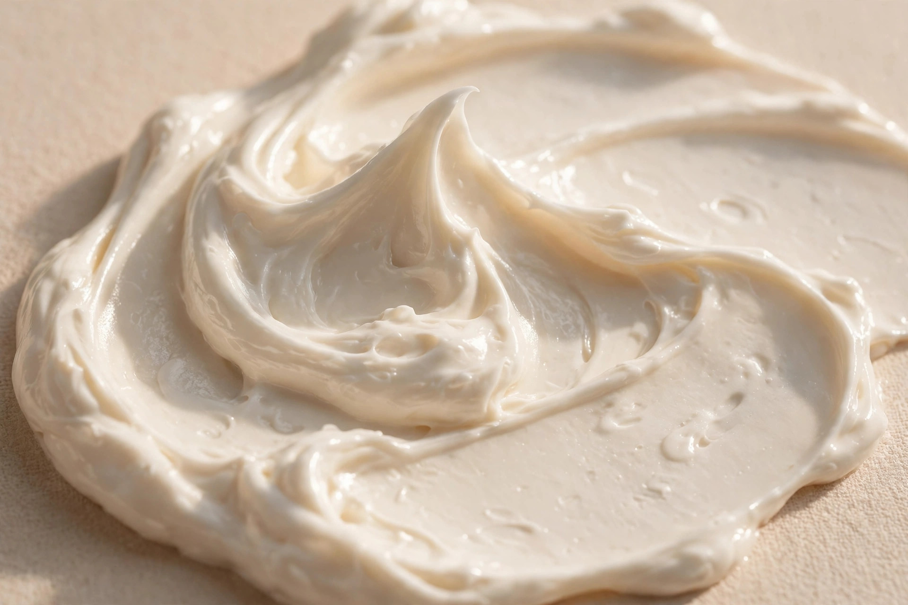

Serum
01 The Ritual
Three minutes, twice a day.
No ten-step routines. No gadgets. Three steps, in the same order, every morning and every night — that is the whole ritual.

01
Cleanse
60 seconds · Huile Nettoyante
Start with dry skin and dry hands. The oil dissolves sunscreen, makeup and the day itself — no foam, no tight feeling after.
Technique
Massage a full pump over your face for 60 seconds. Add a splash of water until it turns milky, then rinse with lukewarm water. Pat dry, never rub.

02
Treat
60 seconds · Lumière Renewal Serum + Éclat
Serum goes on damp skin, while it can still drink. Three to four drops of Lumière, pressed in — then one pump of Éclat around the eyes.
Technique
Warm the serum between your palms. Press, don't rub, over face and neck. Wait one minute before the next step so it can settle.
03
Seal
60 seconds · Crème Velours
Cream is the lid on the jar. Crème Velours locks the water and the serum in, so the work of the first two steps lasts until morning — or until night.
Technique
Warm a pea-sized amount between your palms and press it over face and neck. In the morning, sunscreen goes on after this step, never before.
02 Build your ritual
Start with your skin goal.
Pick one goal. We will highlight the formulas that serve it — the rest of the ritual stays the same.
Hydration first: water in, then a seal. Lumière and Éclat draw water into the skin; Crème Velours keeps it there.
 CreamCleansing oil
CreamCleansing oil
Eye concentrate03 Journal
Read before you buy more.
GuideHow to layer a serum so it actually absorbs
Read the guide
Serum works best on damp skin. After cleansing, leave your face slightly wet — water on the surface helps humectants like hyaluronic acid pull moisture in instead of sitting on top.
Press, don't rub. Rubbing pushes product onto your hands; pressing puts it on your face. Give each layer a minute before the next one, and use less than you think — three to four drops covers a whole face.
IngredientsWhat niacinamide does, in plain language
Read the guide
Niacinamide is vitamin B3. It supports the skin barrier — the wall that keeps water in and irritants out — and it helps tone look more even over weeks, not overnight.
It plays well with almost everything, including vitamin C and retinol, and most skin types tolerate it daily. If a product lists it near the top of the ingredients, that is a good sign it is there to work, not to decorate the label.
RitualA slower morning: building a three-minute ritual that sticks
Read the guide
A ritual fails when it asks for more time than your morning has. Three minutes, three steps, same order every day — that is a routine your hands can learn by heart.
Anchor it to something you already do: cleanse after you brush your teeth, serum while the kettle boils. When the steps have a place in your morning, you stop deciding and start doing.